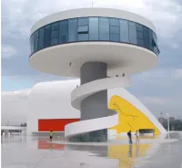

Centre culturel internationale


Situé sur les rives de la mer Égée, le Palais des Congrès d'Izmir, conçu par le visionnaire brésilien Oscar Niemeyer, se dévoile comme une symphonie architecturale moderne au cœur de la Turquie.
Inauguré en 2014, cet édifice captivant incarne l'essence du style de Niemeyer, alliant la fonctionnalité contemporaine à des formes organiques audacieuses.
Les courbes gracieuses du Palais des Congrès évoquent une élégance sculpturale, s'intégrant harmonieusement dans le paysage côtier. Les espaces intérieurs, baignés de lumière naturelle, créent une atmosphère accueillante et inspirante pour les événements et les rencontres qui s'y déroulent.
Le Palais des Congrès d'Izmir témoigne de la capacité de Niemeyer à transcender les frontières culturelles et géographiques, laissant derrière lui un héritage architecturale qui célèbre l'union entre l'esthétique audacieuse et la fonctionnalité moderne.